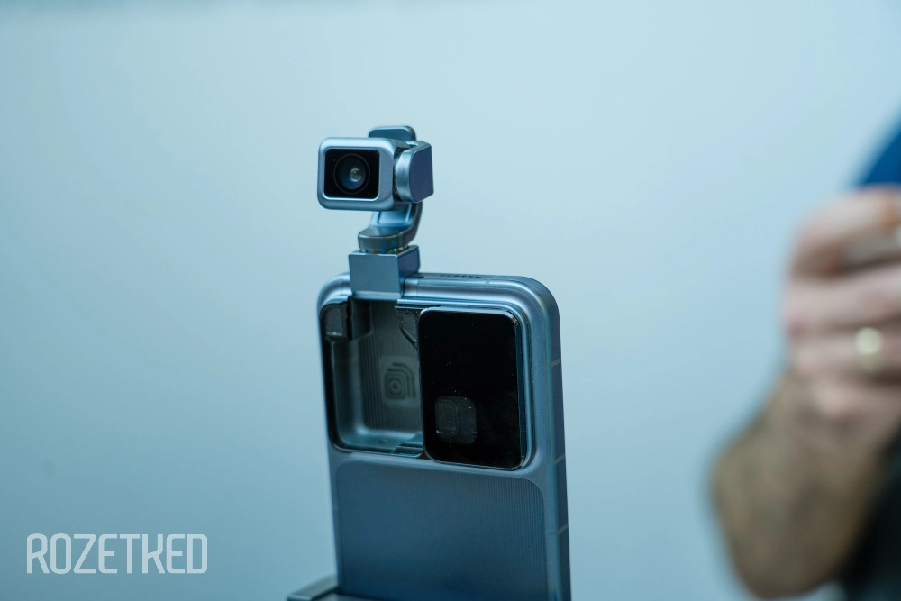
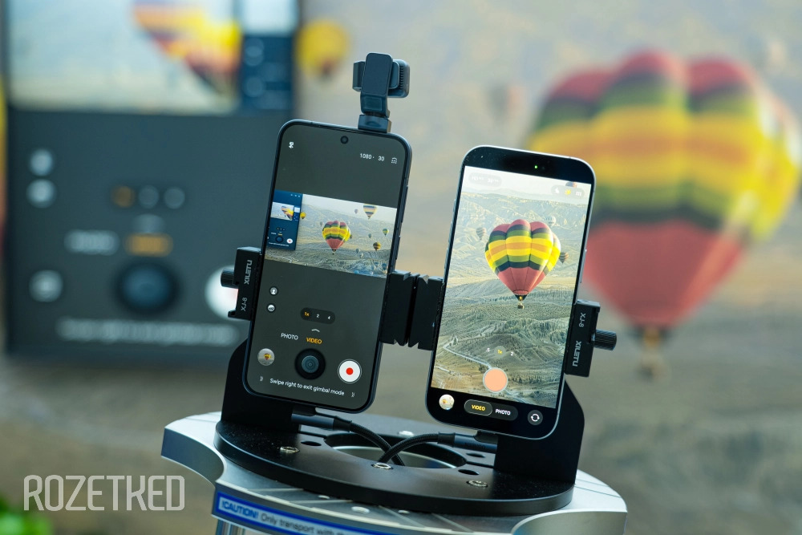

| Новинки в мире гаджетов | Подробнее | Список всех устройств |
|
 |
 |
| Cмартфон с «роботом-камерой» от Honor. Впервые о нём стало известно ещё осенью 2025 года, но на MWC все гости выставки смогли осмотреть его во всей красе. По идее, это обычный смартфон с одной важной деталью — камерой на роботизированном подвесе. Без ИИ не обошлось, поэтому из этой камеры на подвесе получился почти полноценный робот, который осматривается вокруг и понимает, что происходит. Из удобного: такая камера может сфокусировать свой взгляд на вас во время созвона или просто во время записи видео. Из полезного: за счёт роботизированной «ноги» получается неплохая стабилизация видео. Из милого: робот умеет танцевать в такт музыке. И не менее интересный момент — это не просто концепт. В Honor говорят, что хотят выпустить Robot Phone на рынок уже во второй половине этого года. Правда, если это и случится, то, скорее всего, только в Китае. | |